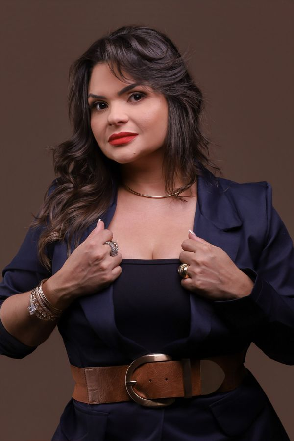

Próximo passo
Quer saber o que faz sentido para o seu rosto?
Agende sua avaliação
Resultados variam de pessoa para pessoa. Procedimentos indicados após avaliação individual.
Dra. Gabriela Lima · [registro profissional]
[@instagram]06/06

A pele tratada em etapas — da base ao refinamento. Arraste para entender →
O Aura Regenere é o meu protocolo autoral de estética integrativa e regenerativa. Primeiro preparamos e nutrimos a pele, depois estimulamos o seu próprio colágeno, devolvemos sustentação e só então fazemos os ajustes finos.
“Antes de qualquer agulha, existe planejamento.”
Com a técnica de i-PRF, usamos o seu próprio sangue para estimular a pele a formar uma reserva de colágeno — de forma natural e regenerativa.
Cada etapa é indicada na avaliação. Você faz só o que o seu rosto precisa.
Resultados variam de pessoa para pessoa. Procedimentos indicados após avaliação individual.
Dra. Gabriela Lima · [registro profissional]